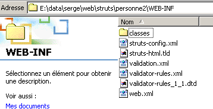
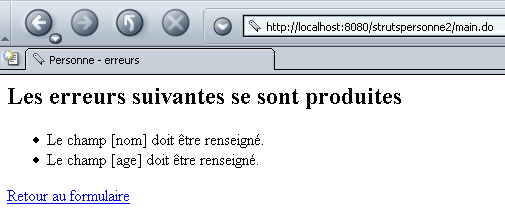

5. النماذج الديناميكية مع قيود التكامل
سنقوم الآن بتطوير تطبيق جديد يسمى strutspersonne2 يستخدم
- نموذجًا ديناميكيًا كما في strutspersonne1
- ملفًا لإعلان قيود التكامل التي يجب التحقق منها عبر حقول هذا النموذج الديناميكي
5.1. إعلان قيود السلامة
كانت الفئة المستخدمة لتخزين قيم الاسم والعمر في تطبيق strutspersonne1 مُعلنة على النحو التالي:
<form-beans>
<form-bean name="frmPersonne" type="istia.st.struts.personne.PersonneDynaForm">
<form-property name="nom" type="java.lang.String" initial=""/>
<form-property name="age" type="java.lang.String" initial=""/>
</form-bean>
</form-beans>
اضطررنا إلى كتابة الفئة PersonneDynaForm لتوفير طريقة التحقق (validate) قادرة على التأكد من صحة قيمتي «الاسم» و«العمر» في النموذج الديناميكي. وكانت عمليات التحقق المطلوبة من نوعين:
- يجب ألا يكون أي من الحقلين فارغًا
- يجب أن يتوافق حقل «العمر» مع القالب (التعبير العادي) \s*\d+\s*
هذان الاختباران هما جزء من عمليات التحقق التي يمكن لبيئة StrutsValidator إجراؤها. تأتي هذه البيئة مع Struts وتحتوي على عدد من الفئات الموجودة في commons-validator.jar و jakarta-oro.jar. إذا كنت قد اتبعت الإجراء الموضح في بداية هذا المستند لتثبيت مكتبات Struts داخل Tomcat، فإن هذه المكتبات متوفرة بالفعل في Tomcat. تأكد من توفرها أيضًا في JBuilder. وقد تم شرح ذلك أيضًا في بداية هذا المستند.
يصبح الإعلان الجديد للنموذج في ملف struts-config.xml كما يلي:
<form-beans>
<form-bean name="frmPersonne" type="org.apache.struts.validator.DynaValidatorForm">
<form-property name="nom" type="java.lang.String" initial=""/>
<form-property name="age" type="java.lang.String" initial=""/>
</form-bean>
</form-beans>
وبالتالي، فإن الفرق ضئيل للغاية. أصبحت الفئة المرتبطة بالنموذج الديناميكي الآن فئة محددة مسبقًا من StrutsValidator: org.apache.struts.validator.DynaValidatorForm. لم يعد المطور بحاجة إلى كتابة أي فئة. فهو يحدد قيود التكامل التي يجب أن يتحقق منها النموذج في ملف منفصل باسم XML. يجب أن يعرف وحدة التحكم Struts اسم هذا الملف. ولهذا الغرض، يظهر قسم تكوين جديد في الملف struts-config.xml:
<plug-in className="org.apache.struts.validator.ValidatorPlugIn">
<set-property
property="pathnames"
value="/WEB-INF/validator-rules.xml,/WEB-INF/validation.xml"
/>
</plug-in>
يُستخدم القسم <plug-in> لتحميل فئة خارجية إلى Struts. السمة الرئيسية له هي classname التي تشير إلى اسم الفئة المراد إنشاء مثيل لها. قد يحتاج الكائن الذي تم إنشاء مثيل له إلى التهيئة. ويتم ذلك باستخدام علامات set-property التي تحتوي على سمتين:
- property: اسم الخاصية المراد تهيئتها
- value: قيمة الخاصية
هنا، تحتاج الفئة DynaValidatorForm إلى معرفتين:
- الملف XML الذي يحدد قيود التكامل القياسية التي تستطيع الفئة التحقق منها.
- الملف XML الذي يحدد قيود السلامة الخاصة بالنماذج الديناميكية المختلفة للتطبيق
يتم توفير هاتين المعلومتين هنا من خلال الخاصية pathnames. قيمة هذه الخاصية هي قائمة بالملفات XML التي سيقوم أداة التحقق بتحميلها:
- validator-rules.xml هو الملف الذي يحدد قيود التكامل القياسية. ويأتي مرفقًا مع Struts. ويمكن العثور عليه في <struts>\lib مصحوبًا بملف التعريف الخاص به DTD:

- validation.xml هو الملف الذي يحدد قيود السلامة للنماذج الديناميكية المختلفة للتطبيق. يتم إنشاؤه بواسطة المطور. ويمكن تسميته بأي اسم.
يمكن وضع هذين الملفين في أي مكان تحت WEB-INF. في مثالنا، سيتم وضعهما مباشرةً تحت WEB-INF:

5.2. كتابة قيود التكامل للنماذج الديناميكية
سيحتوي الملف validation.xml على قيود السلامة الخاصة بنا لحقول «الاسم» و«العمر» في النموذج frmPersonne من النوع org.apache.struts.validator.DynaValidatorForm. ومحتواه كما يلي:
<form-validation>
<global>
<constant>
<constant-name>entierpositif</constant-name>
<constant-value>^\s*\d+\s*$</constant-value>
</constant>
</global>
<formset>
<form name="frmPersonne">
<field property="nom" depends="required">
<arg0 key="personne.nom"/>
</field>
<field property="age" depends="required,mask">
<arg0 key="personne.age"/>
<var>
<var-name>mask</var-name>
<var-value>${entierpositif}</var-value>
</var>
</field>
</form>
</formset>
</form-validation>
قواعد الكتابة التي يجب الالتزام بها هي التالية:
- توجد جميع القواعد داخل علامة <form-validation>
- تُستخدم العلامة <global> لتعريف المعلومات ذات النطاق العام، c.a.d. وهي سارية على جميع النماذج في حالة وجود أكثر من نموذج واحد. وقد أدرجنا هنا ثوابت داخل العلامة <global>. تُعرَّف الثابتة باسمها (العلامة <constant-name>) وقيمتها (العلامة <constant-value>). نحدد الثابت «entierpositif» بقيمة التعبير النمطي الذي يجب أن يستوفيه أي عدد صحيح موجب: ^\s*\d+\s*$ (سلسلة من الأرقام قد تسبقها و/أو تتبعها مسافات).
- تحدد العلامة <formset> مجموعة النماذج التي يجب التحقق من قيود سلامة البيانات الخاصة بها
- تُستخدم العلامة <form name="unFormulaire"> لتعريف قيود السلامة الخاصة بنموذج معين، وهو النموذج الذي يُحدد اسمه بواسطة السمة name. يجب أن يكون هذا الاسم موجودًا في قائمة النماذج المُعرَّفة في struts-config.xml. وهنا، فإن النموذج frmPersonne المستخدم محدد في struts-config.xml من خلال القسم التالي:
<form-beans>
<form-bean name="frmPersonne" type="org.apache.struts.validator.DynaValidatorForm">
<form-property name="nom" type="java.lang.String" initial=""/>
<form-property name="age" type="java.lang.String" initial=""/>
</form-bean>
- تحتوي علامة <form> على عدد من علامات <field> يساوي عدد قيود التكامل التي يجب التحقق منها في النموذج. تحتوي علامة <field> على السمات التالية:
- property: اسم حقل النموذج الذي يتم تحديد قيود التكامل الخاصة به
- depends: قائمة قيود التكامل التي يجب التحقق منها.
- القيود الممكنة هي التالية: required (يجب ألا يكون الحقل فارغًا)، mask (يجب أن تتطابق قيمة الحقل مع تعبير منتظم محدد بواسطة المتغير mask)، integer: يجب أن تكون قيمة الحقل عددًا صحيحًا، byte (بايت)، long (عدد صحيح طويل)، float (عدد حقيقي بسيط)، double (عدد حقيقي مزدوج)، short (عدد صحيح قصير)، date (يجب أن تكون قيمة الحقل تاريخًا صالحًا)، range (يجب أن تكون قيمة الحقل ضمن نطاق معين)، email: (يجب أن تكون قيمة الحقل عنوان بريد إلكتروني صالحًا)، ...
- يتم التحقق من قيود السلامة بالترتيب المحدد في السمة depends. إذا لم يتم التحقق من أحد القيود، فلن يتم اختبار القيود التالية.
- يرتبط كل قيد برسالة خطأ محددة بمفتاح. وفيما يلي بعض الأمثلة على شكل «القيد (المفتاح)»: required (errors.required)، mask (errors.invalid)، integer (errors.integer)، byte (errors.byte)، long (errors.long)، ...
- يتم تعريف رسائل الأخطاء المرتبطة بالمفاتيح السابقة في الملف validator-rules.xml:
# رسائل خطأ Struts Validator
errors.required={0} is required.
errors.minlength={0} can not be less than {1} characters.
errors.maxlength={0} can not be greater than {1} characters.
errors.invalid={0} is invalid.
errors.byte={0} must be a byte.
errors.short={0} must be a short.
errors.integer={0} must be an integer.
errors.long={0} must be a long.
errors.float={0} must be a float.
errors.double={0} must be a double.
errors.date={0} is not a date.
errors.range={0} is not in the range {1} through {2}.
errors.creditcard={0} is an invalid credit card number.
errors.email={0} is an invalid e-mail address.
- نرى أعلاه أن الرسائل مكتوبة باللغة الإنجليزية. علاوة على ذلك، فهي موجودة في شكل تعليقات في الملف الذي يشير إلى ضرورة وضعها في ملف رسائل التطبيق. تجدر الإشارة إلى أن هذا الملف محدد في قسم من الملف struts-config.xml:
تشير السمة parameter إلى أن رسائل التطبيق موجودة في الملف
WEB-INF/classes/ressources/personneressources.properties.
لذلك، يجب وضع رسائل الأخطاء في هذا الملف. وتُضاف إلى الرسائل الموجودة بالفعل:
personne.formulaire.nom.vide=<li>Vous devez indiquer un nom</li>
personne.formulaire.age.vide=<li>Vous devez indiquer un age</li>
personne.formulaire.age.incorrect=<li>L'âge est incorrect</li>
errors.header=<ul>
errors.footer=</ul>
# رسائل خطأ Struts Validator
# المفتاح محدد مسبقًا ولا يجب تغييره
# رسالة الخطأ المرتبطة بها غير محددة
# يمكن أن تحتوي الرسالة على ما يصل إلى 4 معلمات من {0} إلى {3}
errors.required=<li>Le champ [{0}] doit être renseigné.</li>
errors.minlength=<li>Le champ [{0}] foit avoir au moins {1} caractère.</li>
errors.maxlength=<li>Le champ [{0}] ne peut avoir plus de {1} caractères.</li>
errors.invalid=<li>Le champ [{0}] est incorrect.</li>
errors.byte=<li>{0} doit être un octet.</li>
errors.short=<li>{0} doit être un entier court.</li>
errors.integer=<li>{0} doit être un entier.</li>
errors.long=<li>{0} doit être un entier long.</li>
errors.float=<li>{0} doit être un réel simple.</li>
errors.double=<li>{0} doit être un réel double.</li>
errors.date=<li>{0} n'est pas une date valide.</li>
errors.range=<li>{0} doit être dans l'intervalle {1} à {2}.</li>
errors.creditcard=<li>{0} n'est pas un numéro de carte valide.</li>
errors.email=<li>{0} n'est pas une adresse électronique valide.</li>
personne.nom=nom
personne.age=age
لنأخذ قيود سلامة الملف validation.xml واحدة تلو الأخرى لشرحها:
<formset>
<form name="frmPersonne">
<field property="nom" depends="required">
<arg0 key="personne.nom"/>
</field>
...
</form>
</formset>
تجدر الإشارة إلى أن قيود السلامة هذه تنطبق على الحقلين «الاسم» و«العمر» في نموذج ديناميكي محدد في struts-config.xml:
<form-bean name="frmPersonne" type="org.apache.struts.validator.DynaValidatorForm">
<form-property name="nom" type="java.lang.String" initial=""/>
<form-property name="age" type="java.lang.String" initial=""/>
</form-bean>
من المهم أن تكون أسماء النموذج وحقوله متطابقة في كلا الملفين. تنص قيد التكامل على حقل «الاسم» (property="nom") على أن الحقل يجب ألا يكون فارغًا (depends="required"). وإذا لم يكن الأمر كذلك، فسيتم إنشاء كائن ActionError بمفتاح errors.required. وتوجد الرسالة المرتبطة بهذا المفتاح في الملف personne.ressources.properties:
نلاحظ أن هذه الرسالة تستخدم المعلمة {0}. ويتم تحديد قيمتها بواسطة العلامة <arg0> في قيد التكامل:
وهنا أيضًا، يُشار إلى arg0 بواسطة مفتاح موجود أيضًا في ملف الرسائل:
إذا جمعنا كل ذلك معًا، فإن رسالة الخطأ التي يتم إنشاؤها في حالة عدم ملء الحقل «الاسم» هي:
لنحلل الآن القيد الثاني، وهو القيد المتعلق بحقل «العمر»:
<global>
<constant>
<constant-name>entierpositif</constant-name>
<constant-value>^\s*\d+\s*$</constant-value>
</constant>
</global>
<formset>
<form name="frmPersonne">
...
<field property="age" depends="required,mask">
<arg0 key="personne.age"/>
<var>
<var-name>mask</var-name>
<var-value>${entierpositif}</var-value>
</var>
</field>
</form>
</formset>
هناك قيدان لحقل «العمر»: required و mask. يمكن تكرار الشرح السابق بالنسبة لقيد required. ونصل إلى أن رسالة الخطأ المرتبطة بهذا القيد ستكون:
القيد الثاني هو mask. وهذا يعني أن محتوى الحقل يجب أن يتطابق مع نمط يتم التعبير عنه بواسطة تعبير منتظم. يتم تعريف قيمة هذا التعبير في علامة <var> التي تحدد متغيرًا باسم mask (<var-name>) وقيمته ${entierpositif} (<var-value>). entierpositif هو ثابت محدد في قسم <global> من الملف وقيمته هي التعبير النمطي ^\s*\d+\s*$. وبالتالي، فإن شرط التكامل هو أن يكون العمر عبارة عن سلسلة من رقم واحد أو أكثر، قد تسبقها أو تتبعها مسافات. إذا لم يتم التحقق من هذا الشرط، فسيتم إنشاء كائن ActionError بمفتاح errors.invalid. في ملف الرسائل، يرتبط هذا المفتاح بالرسالة التالية:
يجب أن يحدد الشرط قيمة للمعلمة {0}. ويتم ذلك باستخدام العلامة <arg0>:
في ملف الرسائل، يرتبط المفتاح personne.age بالرسالة التالية:
وبالتالي، فإن رسالة الخطأ التي سيتم إنشاؤها في حالة عدم استيفاء شرط mask هي:
5.3. فئات التطبيق
في تطبيق Struts، الفئات التي يجب كتابتها هي فئات النماذج (ActionForm أو مشتقاتها) وفئات الإجراءات (Action أو مشتقاتها). في التطبيق الجديد strutspersonne2، لم تعد هناك فئة للنموذج. يتم تعريف محتوى النموذج في struts-config.xml، بينما يتم تعريف قيود التكامل المرتبطة به في WEB-INF/validation.xml. في تطبيق strutspersonne1، كانت فئة FormulaireAction المخصصة لمعالجة النموذج كما يلي:
package istia.st.struts.personne;
....
public class FormulaireAction
extends Action {
public ActionForward execute(ActionMapping mapping, ActionForm form,
HttpServletRequest request, HttpServletResponse response) throws IOException,
ServletException {
// لدينا نموذج صالح، وإلا لما وصلنا إلى هذه المرحلة
DynaActionForm formulaire=(DynaActionForm)form;
request.setAttribute("nom",formulaire.get("nom"));
request.setAttribute("age",formulaire.get("age"));
return mapping.findForward("reponse");
}//تنفيذ
}
كانت الفئة FormulaireAction تتوقع استلام نموذج على شكل كائن DynaActionForm (الرمز الموضح في الإطار). لكن في الملف struts-config.xml، تم تعريف فئة النموذج على النحو التالي:
<form-bean name="frmPersonne" type="org.apache.struts.validator.DynaValidatorForm">
...
</form-bean>
وبالتالي، سيتم وضع النموذج في كائن من النوع DynaValidatorForm. وتبين أن هذه الفئة مشتقة من الفئة DynaActionForm. لذا، تظل الطريقة execute الخاصة بفئتنا FormulaireAction صالحة. ولا داعي لإعادة كتابتها.
5.4. نشر واختبار تطبيق strutspersonne2
5.4.1. إنشاء السياق
لقد أطلقنا على هذا التطبيق الجديد اسم strutspersonne2. نقوم بإنشاء تعريف جديد في ملف <tomcat>\conf\serveur.xml الخاص بـ Tomcat 4.x:
بعد الانتهاء من ذلك، يجب إعادة تشغيل Tomcat. يمكن التحقق من صحة السياق عن طريق طلب URL:
http://localhost:8080/strutspersonne2/

5.4.2. طرق العرض
سنقوم بنسخ مجلد «vues» الخاص بالتطبيق strutspersonne1 إلى مجلد التطبيق strutspersonne2. ذلك أن العروض لم تتغير.

5.4.3. المجلد WEB-INF
سنقوم بنسخ المجلد WEB-INF من تطبيق strutspersonne1 إلى مجلد تطبيق strutspersonne2. وقد تغيرت بعض الملفات:

يصبح ملف التكوين struts-config.xml كما يلي:
<?xml version="1.0" encoding="ISO-8859-1" ?>
<!DOCTYPE struts-config PUBLIC
"-//Apache Software Foundation//DTD Struts Configuration 1.1//EN"
"http://jakarta.apache.org/struts/dtds/struts-config_1_1.dtd">
<struts-config>
<form-beans>
<form-bean name="frmPersonne" type="org.apache.struts.validator.DynaValidatorForm">
<form-property name="nom" type="java.lang.String" initial=""/>
<form-property name="age" type="java.lang.String" initial=""/>
</form-bean>
</form-beans>
<action-mappings>
<action
path="/main"
name="frmPersonne"
validate="true"
input="/erreurs.do"
scope="session"
type="istia.st.struts.personne.FormulaireAction"
>
<forward name="reponse" path="/reponse.do"/>
</action>
<action
path="/erreurs"
parameter="/vues/erreurs.personne.jsp"
type="org.apache.struts.actions.ForwardAction"
/>
<action
path="/reponse"
parameter="/vues/reponse.personne.jsp"
type="org.apache.struts.actions.ForwardAction"
/>
<action
path="/formulaire"
parameter="/vues/formulaire.personne.jsp"
type="org.apache.struts.actions.ForwardAction"
/>
</action-mappings>
<message-resources
parameter="ressources.personneressources"
null="false"
/>
<plug-in className="org.apache.struts.validator.ValidatorPlugIn">
<set-property
property="pathnames"
value="/WEB-INF/validator-rules.xml,/WEB-INF/validation.xml"
/>
</plug-in>
</struts-config>
هذا الملف مطابق لملف تطبيق strutspersonne1 باستثناء التعريف الديناميكي للنموذج وإدراج المكون الإضافي للتحقق من الصحة (الأجزاء المحاطة بإطار).
يتم إضافة ملف التحقق validation.xml التالي إلى WEB-INF:
<form-validation>
<global>
<constant>
<constant-name>entierpositif</constant-name>
<constant-value>^\s*\d+\s*$</constant-value>
</constant>
</global>
<formset>
<form name="frmPersonne">
<field property="nom" depends="required">
<arg0 key="personne.nom"/>
</field>
<field property="age" depends="required,mask">
<arg0 key="personne.age"/>
<var>
<var-name>mask</var-name>
<var-value>${entierpositif}</var-value>
</var>
</field>
</form>
</formset>
</form-validation>
نضيف إلى WEB-INF الملفات validator-rules.xml و validator-rules_1_1.dtd الموجودة في <struts>\lib:
في المجلد WEB-INF/classes، لم يعد هناك سوى فئة واحدة:

في المجلد WEB-INF\classes\ressources، نجد ملف الرسائل personneressources.properties التالي:
personne.formulaire.nom.vide=<li>Vous devez indiquer un nom</li>
personne.formulaire.age.vide=<li>Vous devez indiquer un age</li>
personne.formulaire.age.incorrect=<li>L'âge est incorrect</li>
errors.header=<ul>
errors.footer=</ul>
# رسائل خطأ من Struts Validator
# المفتاح محدد مسبقًا ولا يجب تغييره
# رسالة الخطأ المرتبطة بها حرة
# يمكن أن تحتوي الرسالة على ما يصل إلى 4 معلمات من {0} إلى {3}
errors.required=<li>Le champ [{0}] doit être renseigné.</li>
errors.minlength=<li>Le champ [{0}] foit avoir au moins {1} caractère.</li>
errors.maxlength=<li>Le champ [{0}] ne peut avoir plus de {1} caractères.</li>
errors.invalid=<li>Le champ [{0}] est incorrect.</li>
errors.byte=<li>{0} doit être un octet.</li>
errors.short=<li>{0} doit être un entier court.</li>
errors.integer=<li>{0} doit être un entier.</li>
errors.long=<li>{0} doit être un entier long.</li>
errors.float=<li>{0} doit être un réel simple.</li>
errors.double=<li>{0} doit être un réel double.</li>
errors.date=<li>{0} n'est pas une date valide.</li>
errors.range=<li>{0} doit être dans l'intervalle {1} à {2}.</li>
errors.creditcard=<li>{0} n'est pas un numéro de carte valide.</li>
errors.email=<li>{0} n'est pas une adresse électronique valide.</li>
personne.nom=nom
personne.age=age

5.5. الاختبارات
نحن جاهزون لإجراء الاختبارات. فيما يلي بعض لقطات الشاشة التي يُطلب من القارئ محاكاتها.
نطلب من القارئ إعادة إنتاج URL http://localhost:8080/strutspersonne2/formulaire.do:

نستخدم الزر [Envoyer] دون ملء الحقول:

نكرر المحاولة مع وجود خطأ في حقل «العمر»:

نحصل على الرد التالي:

نحاول مرة أخرى، هذه المرة بإدخال القيم الصحيحة:

نحصل على الإجابة التالية:

5.6. الخلاصة
لقد أوضحنا أن استخدام النماذج الديناميكية التي تكون فيها قيود التكامل «قياسية» يتجنب الحاجة إلى إنشاء فئات لتمثيلها. أما إذا كانت قيود التكامل خارجة عن المعيار، فإننا نضطر مرة أخرى إلى إنشاء فئات للتحقق من هذه القيود الجديدة.